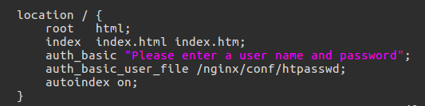
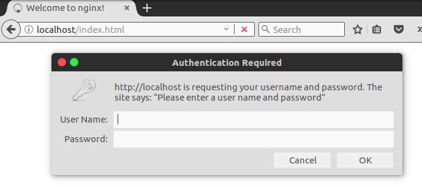
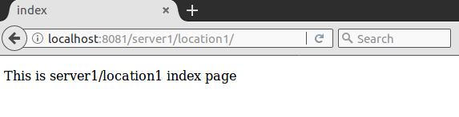
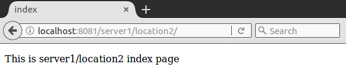
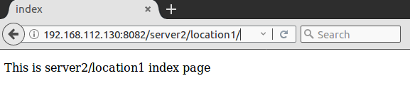
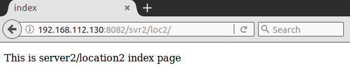
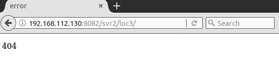

Nginx配置文件主要分成四部分：main（全局设置）、http（HTTP的通用设置）、server（虚拟主机设置）、location（匹配URL路径）。还有一些其他的配置段，如event，upstream等。
一个完整的Nginx配置如下：
|
|
Nginx基础配置指令
user
用于指定运行Nginx的用户和组：
|
|
只有被设置的用户或者用户组成员才有权限启动Nginx服务。如果希望所有用户都可以启动Nginx，则只需将其注释掉或者指定为：
|
|
worker_processes
指定Nginx的工作进程的个数，可以设置为与 CPU 数量相同，基本语法：
|
|
设置为auto时，Nginx进程将自动检测。当worker_processes设置为1时：
|
|
将worker_processes设置为3时：
|
|
worker_processes进程数变成了3个。
error_log
用于配置错误日志的存放路径。http，server和location块也可配置error_log，区别在于级别不一样。基本语法：
|
|
debug级别最高，emerg级别最低。比如设置级别为warn后，warn，error，crit，alert和emerg级别的日志都会被记录。Nginx默认日志存放路径为：logs/error.log。
pid
pid指令用于指定存放Nginx主进程号存放文件的路径。默认的路径为：
|
|
worker_rlimit_nofile
设置毎个进程的最大文件打开数。如果不设的话上限就是系统的ulimit –n的数字（1024）。
worker_connections
设定一个worker进程的最大连接数。默认为512，按自己系统的硬件配置调整，不能超过worker_rlimit_nofile。
include
include指令用于引入第三方配置文件，比如常见的MIME类型等。
accept_mutex
该条指令目的是为了解决“惊群”的问题。“惊群”大致意思是：当某个时刻只有一个网络连接时，多个进程会被同时唤醒，但最终实际上只有一个进程可以获得连接，由于唤醒了别的不必要的进程，造成了性能的浪费。
accept_mutex语法如下：
|
|
默认为开启（on）状态，只能在events块中进行设置。
multi_accept
用于设置是否允许worker_process同时接受多个网络连接。语法如下：
|
|
其默认为关闭（off）状态，也就是说每个worker_process一次只能接收一个新到达的网络连接。
该指令只能在events模块中设置。
use
use指令用于选择事件的驱动模型。语法如下：
|
|
Nginx提供了多种事件驱动模型来处理网络消息，method可选的内容有：select，poll，kqueue，epoll，rtsig，/dev/poll和eventport。
该指令只能在events模块中设置。
worker_connentions
用于设置每个worker_process最大的连接数。语法如下：
|
|
该指令只能在events模块中设置。
指定MIME
在配置文件中，可以看到如下两条配置：
|
|
include指令引入了mime.types文件，其中mime.types内容如下：
|
|
default_type application/octet-stream指定了默认类型为二进制流。如果不指定的话，默认值为text/plain。
该指令可以在http，server或location模块中设置。
自定义服务日志
error_log用于记录Nginx运行时的常规日志，而access_log（服务日志）是指Nginx服务器在响应各种前端请求的日志。包含两个指令：access_log和log_format。
access_log的语法如下：
|
|
path用于指定该日志的存放路径，format为可选项，代指自定义服务日志的格式字符串。size为可选项，用于配置临时存放日志的内存缓存区大小。
log_format的语法如下：
|
|
name用于为该格式定义一个变量名，供access_log指令使用。string为格式字符串，比如：$remote_addr - $remote_user [$time_local] $status其中$remote_addr等为Nginx预设的一些变量，常用的变量有：
| 参数 | 说明 | 示例 |
| $remote_addr | 客户端地址 | 211.28.65.253 |
| $remote_user | 客户端用户名称 | – |
| $time_local | 访问时间和时区 | 18/Jul/2012:17:00:01 +0800 |
| $request | 请求的URI和HTTP协议 | “GET /article-10000.html HTTP/1.1” |
| $http_host | 请求地址，即浏览器中你输入的地址（IP或域名） | www.it300.com 192.168.100.100 |
| $status | HTTP请求状态 | 200 |
| $upstream_status | upstream状态 | 200 |
| $body_bytes_sent | 发送给客户端文件内容大小 | 1547 |
| $http_referer | url跳转来源 | https://www.baidu.com/ |
| $http_user_agent | 用户终端浏览器等信息 | “Mozilla/4.0 (compatible; MSIE 8.0; Windows NT 5.1; Trident/4.0; SV1; GTB7.0; .NET4.0C; |
| $ssl_protocol | SSL协议版本 | TLSv1 |
| $ssl_cipher | 交换数据中的算法 | RC4-SHA |
| $upstream_addr | 后台upstream的地址，即真正提供服务的主机地址 | 10.10.10.100:80 |
| $request_time | 整个请求的总时间 | 0.205 |
| $upstream_response_time | 请求过程中，upstream响应时间 | 0.002 |
该指令只能在http模块中设置。
sendfile & sendfile_max_chunk
sendfile用于开启或关闭使用sendfile()传输文件。语法如下：
|
|
可以在http，server或location中进行配置。
sendfile_max_chunk用于设置Nginx进程中的每个worker_process每次调用sendfile()传输的数据量的最大值。默认值为0，表示没有限制。比如：
|
|
该指令可以在http，server或location块中配置。
keepalive_timeout
用于设置Nginx服务器与用户建立会话连接保持的时间，语法如下：
|
|
timeout用于设置服务器端保持连接的时间；header_timeout为可选项，用于配置应答报文头部的Keep-Alive域的值。
该指令可以在http，server和location块中配置。
keepalive_requests
用于限制用户通过某一连接向服务器发送请求的次数，语法如下：
|
|
默认值为100，可以在http，server和location块中配置。
listen
该指令用于配置监听。配置方法主要有三种：
1、配置监听的IP地址：
|
|
2、配置监听端口
|
|
3、配置UNIX Domain Socket
|
|
address，IP地址，如果是IPv6的地址，需使用[]，比如[fe80 ::1]。port，端口号。path，socket文件路径，如/var/run/nginx.sock等。default_server，标识符，表示设置为默认主机。rcvbuf=size，设置监听socket接收缓存区大小。sndbuf=size，设置监听socket发送缓存区大小。deferred，标识符，将accept()设置为Deferred模式。accept_filter=filter，设置监听端口对请求的过滤 ，被过滤的内容不能被接收和处理。ssl，标识符，设置会话连接使用SSL模式进行。
一些例子：
|
|
server_name
Nginx配置文件中的每个server块对于一个虚拟主机配置，server_name用于指定虚拟主机的名称，用户可通过这个名称来向此虚拟主机发送请求。server_name的配置分为名称和IP两种方式。
基于名称的虚拟主机配置
基于名称的虚拟主机配置时，server_name的语法如下：
|
|
name可以有一个或多个名称并列，用空格隔开。每个名称对应一个域名，由两段或者三段组成，之间由.隔开。比如：
|
|
1、在name中可以使用通配符*，通配符可用在三段式域名的头或尾，或两段式域名的尾部，比如：
|
|
2、在name中还可以使用正则表达式。使用~作为正则表达式开始的标记，比如：
|
|
此时比如通过www1.mrbird.cc可以访问Nginx服务，而www.mrbird.cc不可以。
name中的正则表达式支持字符串捕获功能，字符串捕获通过( )来拾取后面不紧跟其他的正则表达式的字符。一个正则表达式中可以存在多个不嵌套的小括号，这些内容会从左到右依次存放在变量$1、$2、$3……中。下文使用时就可直接使用这些变量，作用域为当前的server块。
比如有如下的server_name配置：
|
|
当通过www.mrbird.cc访问Nginx服务器时，将会被上面的正则表达式匹配成功，mrbird将会被捕获，并且赋值给$1。
由于有两种匹配的方式，所以有可能出现两种情况都匹配的时候，这时候Nginx按照以下的优先级进行选择：
准确匹配server_name。
通配符在开始时匹配server_name成功。
通配符在结束时匹配server_name成功。
正则表达式匹配server_name成功。
此外，如果server_name被处于同一优先级的匹配方式多次匹配成功，则以首先匹配成功的为主。
基于IP的虚拟主机配置
Linux操作系统支持IP别名的添加，配置基于IP的虚拟主机，即为Nginx服务器提供的每台虚拟主机配置一个不同的IP。
查看当前网络配置：
|
|
ens33为正在使用的网卡，IP为192.168.112.128，给其添加两个IP别名192.168.112.130和192.168.112.131：
|
|
关于给网卡添加多个IP别名可以参考http://www.cnblogs.com/biaopei/p/7730517.html
这时候就可以在Nginx配置文件中配置两台基于IP配置的虚拟主机了：
|
|
location块
location语法如下：
|
|
uri是待匹配的请求字符串，可以是标准uri（不含正则表达式）和正则uri。
=用于标准uri前，要求请求字符串与uri严格匹配，如果成功，则停止搜索并立即处理此请求。~用于表示uri含正则表达式，区分大小写。~*用于表示uri包含正则表达式，不区分大小写。^~用于标准uri前，要求Nginx服务器找到和请求字符串匹配度最高的标准uri对应的location后，立即用此location处理请求，而不再使用location块中的正则uri和请求字符串做匹配。
一个示例：
|
|
匹配的优先级：
(location =) > (location 完整路径) > (location ^~ 路径) > (location ~,~* 正则顺序) > (location 部分起始路径) > (/)
按照上面的location写法，以下的匹配示例成立：
/ -> config A 精确完全匹配，即使/index.html也匹配不了。
/downloads/download.html -> config B 匹配B以后，往下没有任何匹配，采用B。
/images/1.gif -> configuration D 匹配到F，往下匹配到D，停止往下。
/images/abc/def -> config D 最长匹配到G，往下匹配D，停止往下。 你可以看到 任何以/images/开头的都会匹配到D并停止，FG写在这里是没有任何意义的，H是永远轮不到的，这里只是为了说明匹配顺序
/documents/document.html -> config C 匹配到C，往下没有任何匹配，采用C。
/documents/1.jpg -> configuration E 匹配到C，往下正则匹配到E。
/documents/Abc.jpg -> config CC 最长匹配到C，往下正则顺序匹配到CC，不会往下到E。
参考自： seanlook’s blog
root
root用于配置根目录，比如有如下location配置：
|
|
当location块接收到/data/index.html的请求后，将在/locationtest1/data/目录下找到index.html。
该指令可在http，server或location块中配置。
alias
alias用于改变location接收到的URI请求路径。比如：
|
|
当location块接收到/data/index.html的请求后，通过alias，Nginx到/locationtest1/other/目录下搜寻index.html。相当于请求从/data/index.html更改为了/locationtest1/other/index.html。
index
index用于设置网站的默认首页。比如：
|
|
当请求为/data/locationtest1/web/时，Nginx依次搜寻index.locationtest1.html、index.html和myindex.html页面，先找到哪个就用哪个。
error_page
该指令用于设置网站的错误页面。语法如下：
|
|
code，要处理的HTTP错误码。response，可选项，将code指定的错误码转化为新的错误代码response。uri，错误页面的路径或者网站地址。
比如：
|
|
Nginx使用Nginx安装目录/html/404.html页面响应404错误。
|
|
Nginx使用http://somewebsite.com/forbidden.html页面响应403错误。
|
|
Nginx服务器产生410的HTTP消息时，使用Nginx安装目录/html/empty.gif返回给用户，HTTP的状态码为301。
加入想要改变Nginx安装目录/html/这个默认的路径，可以添加一个locaiton块：
|
|
该指令可在http，server和location块中配置。
基于IP配置Nginx访问权限
allow指令用于配置允许访问Nginx的客户端IP，语法如下：
|
|
address，指定允许访问的IP，不支持多个值，如需要有多个IP设置，需要重复使用allow命令。CIDR，允许访问的客户端的CIDR地址。all，代表允许所有的客户端访问。
deny指令用于配置禁止访问Nginx的客户端IP，语法如下：
|
|
这两个指令可在http，server和location块中配置。
配置Nginx密码
auth_basic指令用于开启或者关闭认证功能，语法如下：
|
|
stirng，开启认证功能，并配置了验证时的信息。off，关闭认证。
auth_basic_user_file指令指定了包含用户名和密码的信息文件路径，语法结构为：
|
|
如，在nignx.conf里配置如下：

生产htpasswd文件：
|
|
重启Nginx后，访问http://localhost/index.html，页面显示如下：

配置实例
将conf/nginx.conf配置成如下：
|
|
构建一个静态网站，目录结构如下：
|
|
启动Nginx服务：
|
|
访问http://localhost:8081/server1/location1/：

访问http://localhost:8081/server1/location2/：

访问http://192.168.112.130:8082/server2/location1/：

访问http://192.168.112.130:8082/svr2/loc2/：

访问http://192.168.112.130:8082/svr2/loc3/：

结果证明，上述配置正确。